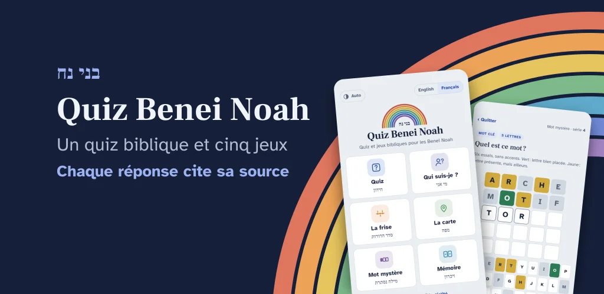
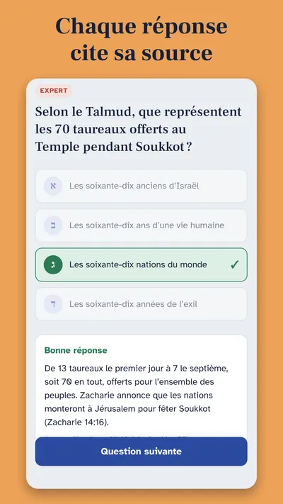
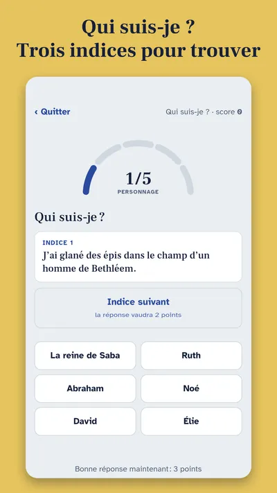
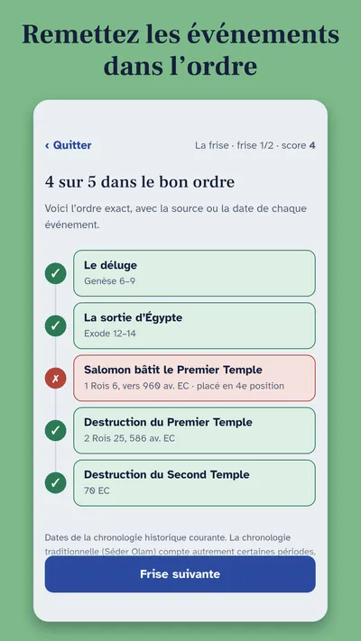
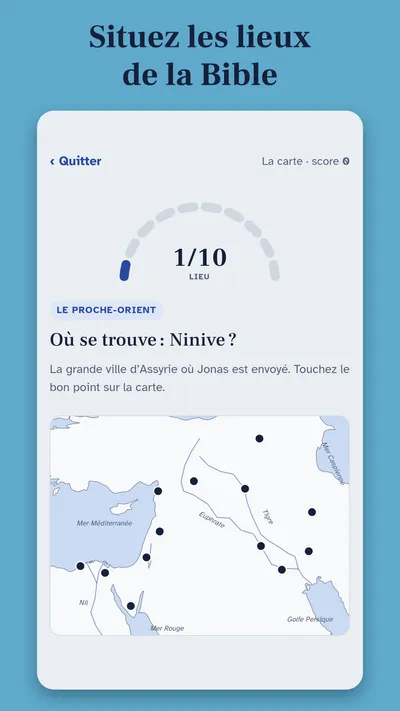
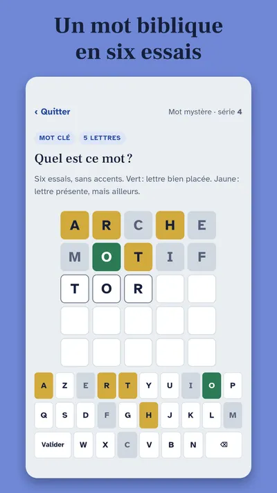

Test fermé sur Android
Devenez l’un de nos premiers testeurs
Quiz Benei Noah est un quiz biblique gratuit pour les Benei Noah : 60 questions sur la Torah, les Prophètes et les Écrits, la période du Second Temple, les fêtes juives, les sept lois noahides et l’hébreu biblique, avec la source de chaque réponse, et cinq jeux.
- Gratuit
- Fonctionne hors ligne
- Sans publicité ni compte
Votre aide : avant de pouvoir publier l’app sur Google Play, Google exige un test avec au moins 12 personnes pendant 14 jours. Si vous avez un téléphone ou une tablette Android, vous pouvez en faire partie.
Participer au test en une minute
Un aperçu





Participer au test
- Rejoignez le groupe des testeurs (un clic).
- Ensuite, ouvrez le lien du test depuis votre appareil Android, acceptez de devenir testeur, puis installez l’app depuis Google Play. Si le lien indique que le test n’est pas disponible, réessayez quelques heures plus tard.
- Restez inscrit(e) pendant au moins 14 jours et gardez l’app installée.
- Ouvrez l’app de temps en temps, essayez le quiz et les jeux, puis dites-nous ce que vous en pensez : une erreur dans une question ou une source, un bogue, un passage peu clair.